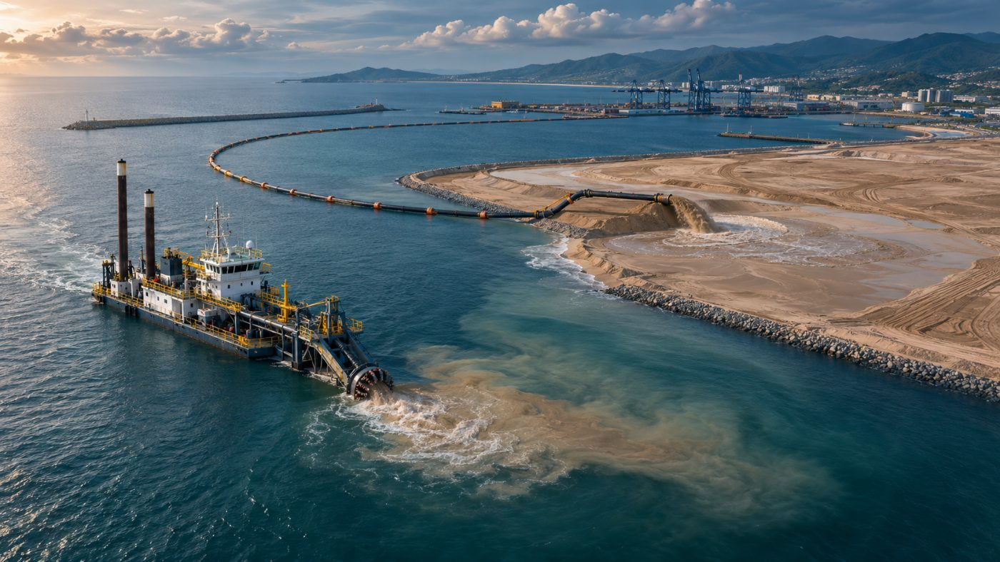
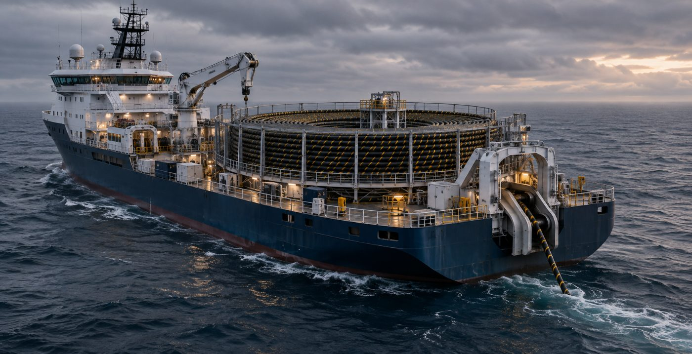
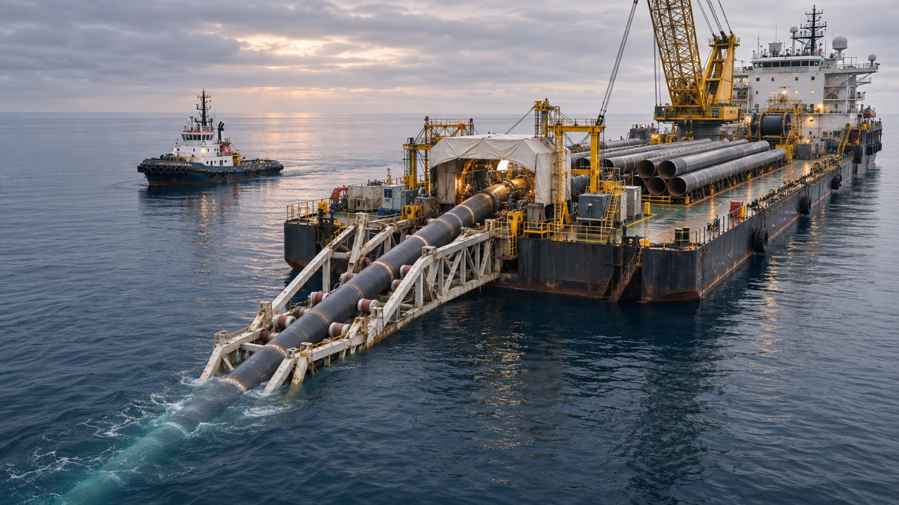
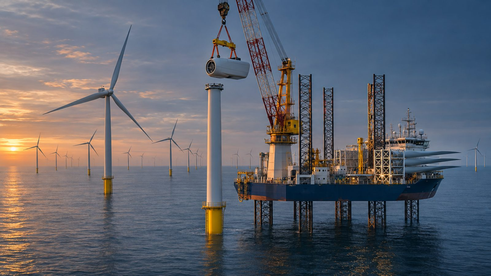
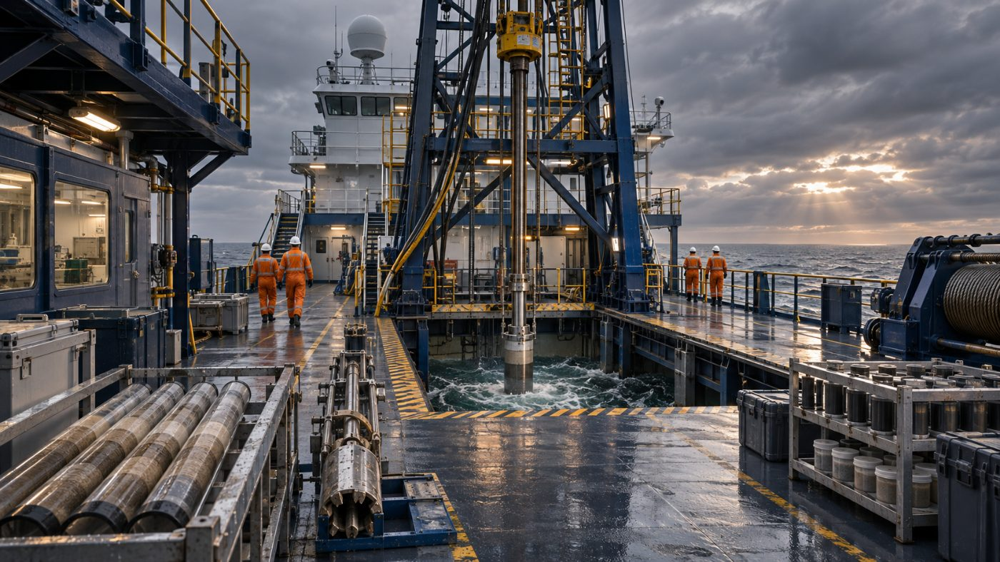
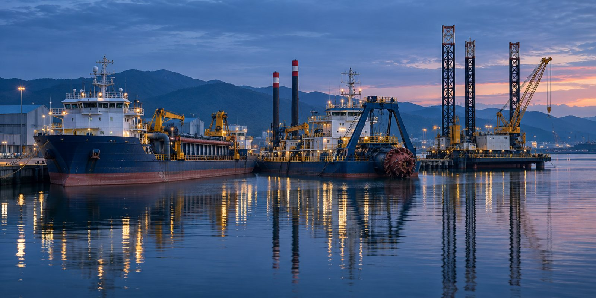

Global marine expertise, delivered in Korean waters.
세계의 해양 기술을
한국의 바다로 잇습니다.
KOMARINE SOLUTION is a Seoul-based engineering and consulting partner for dredging, reclamation, subsea cable and pipeline, offshore wind and offshore geotechnical works, connecting international marine contractors with Korean owners and industry. 코마린 솔루션은 준설·매립, 해저 케이블·파이프라인, 해상풍력, 해양 지반조사 분야의 서울 기반 엔지니어링·컨설팅 파트너입니다. 세계적 해양 시공사와 한국의 발주처·산업계를 연결합니다.
Marine projects are won or lost long before the first vessel mobilises — in the choice of method, partner and equipment. For more than four decades, we have helped our clients make those choices right.
해양 공사의 성패는 첫 선박이 투입되기 훨씬 전, 공법과 파트너와 장비를 고르는 순간에 갈립니다. 우리는 40년 넘게 그 선택을 고객과 함께해 왔습니다.
A two-way bridge between global capability and Korean demand.세계의 역량과 한국의 수요를 잇는 양방향 다리
International specialists need a trusted partner who knows Korean owners, rules and supply chains. Korean owners need access to vessels and methods the domestic market cannot always provide. We stand in between.해외 전문 시공사에게는 한국의 발주처·제도·공급망을 아는 믿을 만한 파트너가, 국내 발주처에게는 국내에서 구하기 어려운 특수 선박과 공법이 필요합니다. 코마린은 그 사이에 섭니다.
Enter and deliver in Korea with confidence
해외 시공사의 한국 진출과 수행
- Korean market and tender intelligence한국 시장·입찰 정보와 동향
- Local partner, subcontractor and supplier sourcing국내 협력사·하도급·공급사 발굴
- Client relations and technical presentations발주처 관계 구축과 기술 설명
- Permitting and stakeholder coordination support인허가·이해관계자 협의 지원
- Local representation through project delivery공사 기간 현지 대리와 조율
Access the right vessels, methods and partners
국내 발주처·EPC·산업계의 해외 역량 확보
- Access to specialist vessels and proven methods특수 선박과 검증된 공법에 대한 접근
- Method comparison and feasibility input공법 비교와 타당성 검토 의견
- Contractor pre-qualification and introductions해외 시공사 사전 검증과 소개
- Bid, contract and interface support입찰·계약·인터페이스 지원
- Marine equipment charter해양 장비 용선(차터)
Six disciplines, one seabed.여섯 개의 분야, 하나의 바다
Our work spans the full marine scope of ports, coasts and the energy transition.항만과 해안, 그리고 에너지 전환의 해양 공정 전반을 다룹니다.

Port and channel deepening, land reclamation and coastal works, from method selection and dredger matching to execution support.
항로·항만 증심 준설, 매립과 해안 공사. 공법 선정과 준설선 매칭부터 수행 지원까지.

Power and telecom cable installation: route engineering input, laying, burial and protection with experienced installation contractors.
전력·통신 해저 케이블의 경과지 검토, 포설, 매설, 보호 공사를 전문 시공사와 함께합니다.

Subsea pipeline laying, pre- and post-lay trenching, shore approaches and stabilisation.
해저 배관 포설, 사전·사후 트렌칭, 육상 접안부와 안정화 공사.

Balance-of-plant marine scopes: seabed preparation, foundations, scour protection, array and export cables.
해저면 정지, 기초 설치, 세굴 방지, 내부망·송전 케이블 등 해상풍력 해양 공정 전반.

Offshore drilling, seabed sampling and in-situ testing that underpin safe foundation and route design.
기초·경과지 설계의 근거가 되는 해상 시추, 해저 시료 채취, 현장 시험.

Charter brokerage for dredgers, work vessels and special marine equipment, including terms and mobilisation planning.
준설선, 작업선, 특수 해양 장비의 용선 주선과 계약 조건·투입 일정 조율.
Korea's seas are entering a decade of build-out.한국의 바다는 대규모 건설의 10년에 들어섰습니다.
Offshore wind tenders and a national subsea HVDC grid are moving from plans to procurement. Installation vessels, cable-laying capacity and seabed know-how sit at the centre of delivery.해상풍력 입찰과 서해안 해저 HVDC 송전망이 계획에서 발주 단계로 넘어가고 있습니다. 설치 선박, 케이블 포설 능력, 해저 지반 기술이 사업의 중심에 있습니다.
Offshore wind capacity scheduled for tender in Korea, 2026–2035 (4 GW+ per year)
2026~2035년 해상풍력 입찰 예정 물량 (연 4GW 이상)
MCEE · 30 Jun 2026Cumulative offshore wind target by 2035, with 10.5 GW deployed or under construction by 2030
2035년 해상풍력 누적 보급 목표 (2030년 10.5GW 보급·착공)
MCEE · 30 Jun 2026West Coast HVDC subsea grid: four 2 GW links at 500 kV, first link targeted for 2030
서해안 HVDC 해저 송전망: 2GW급 4개 노선(500kV), 첫 구간 2030년 준공 목표
KEPCO · 19 Mar 2026Offshore Wind Special Act in force from 26 March 2026, introducing planned wind zones
해상풍력특별법 2026년 3월 26일 시행, 계획입지 발전지구 도입
Korea Law Information CenterFour decades on the water, since 1979.1979년부터, 바다 위의 40여 년
From national dredging works to a quarter century representing a global marine contractor in Korea.국가 준설 사업 현장에서 출발해, 25년간 세계적 해양 시공사의 한국 대표로 일했습니다.
Korea Dredging Corporation
한국준설공사
Engineer and manager on dredging works in Busan and Incheon.
부산·인천 준설 현장 엔지니어·매니저
Hanjin Engineering & Construction
한진건설
Team leader, Dredging & Harbour Department.
준설·항만부 팀장
KOMARINE founded in Seoul
서울에서 코마린 설립
Engineering, consulting and marine equipment charter.
엔지니어링·컨설팅과 해양 장비 용선
Representative in Korea, Jan De Nul Group
얀데눌 그룹 한국 대표
Dredging, reclamation, subsea cable and pipeline, offshore wind.
준설·매립, 해저 케이블·파이프라인, 해상풍력
KOMARINE SOLUTION
Independent partner for marine and offshore projects in Korea and beyond.
국내외 해양·해상 프로젝트의 독립 파트너
From first question to final handover.첫 질문부터 마지막 인계까지
Assess
사업 검토
Site conditions, quantities, schedule and constraints. Which methods are realistic?
해역 조건, 물량, 일정, 제약을 살펴 현실적인 공법을 가립니다.
Match
파트너·장비 매칭
The best-fit combination of contractors, vessels and suppliers, in Korea and abroad.
국내외 시공사·선박·공급사 가운데 가장 맞는 조합을 찾습니다.
Secure
입찰·계약 지원
Proposals, technical clarifications and balanced contract terms.
제안서, 기술 협의, 균형 잡힌 계약 조건을 돕습니다.
Deliver
현장 조율
From mobilisation to completion, keeping owners, contractors and authorities aligned.
장비 투입부터 준공까지 발주처·시공사·관계 기관 사이를 잇습니다.
Steven Park박상경박상경Steven Park
“I started on a dredging site in 1979. What I have learned since is simple: good projects begin with the right connections. We will keep connecting owners and contractors, Korea and the world, with integrity.”
“1979년 준설 현장에서 일을 시작했습니다. 그 뒤로 배운 것은 단순합니다. 좋은 공사는 좋은 연결에서 시작됩니다. 발주처와 시공사, 한국과 세계를 정직하게 잇는 일을 계속하겠습니다.”